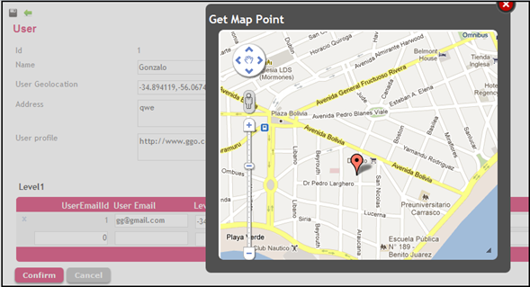
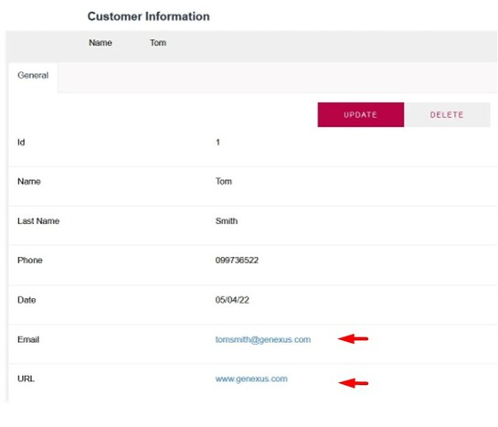
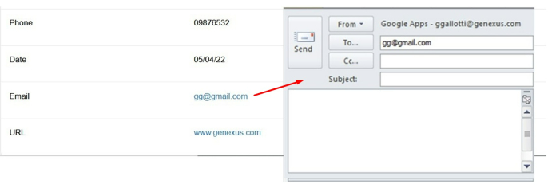

When developing applications with GeneXus, it is desired that data inputs have meanings or actions, according to the context of the application. For instance, each Transaction attribute represents a different kind of data, like Id, Name, Phone, Photo, Email, Address, etc. So, you would want that each one of these attributes had a “semantic behavior” according to its meaning, like displaying an address on a map when working with an address, enabling a phone call when displaying a phone number, or opening the camera application when working with an image.
When defining an attribute that content in its name the word "Address", "Email", "Phone", etc., GeneXus assigns automatically to it a predefined Semantic Domain. You can also assign explicitly a Semantic Domain to an attribute or variable.
When a field is intended to have an address, if it is based on a “GeoLocation” domain, this can be obtained by a <latitude, longitude> point, and also be displayed on a Google map.

When displaying information related to an Organization, one of many fields could be the URL of their site. It is useful that when this information is displayed, the URL appears as a link to this site.

Also, when an Email attribute or variable is shown on screen, a default action is set to open the default mail client and create a new blank mail to this address:

When the application is accessed from a Phone, for Attributes/Variables based on the Phone Semantic Domain, it will be able to call the desired number.